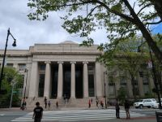 |
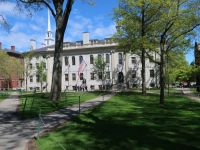 |
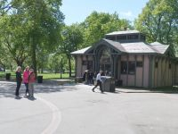 |
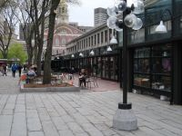 |
| M.I.T. | Harvard University | Boston Common | Quincy Market |
First night at the hotel I felt cold, I failed to control an air conditioner.
The information office of Boston Common is the start point for Freedom Trail. The red line in front of the office leads Freedom Trail. Walking on this line, we looked and felt the old calm town.
Next day we went to the Bunker Hill, the ending point, and continue the way to the inverse direction
At Quincy Market we ate cream chowder bread & lobster salad roll for lunch, too.
At 6:00 we left the hotel for Boston. We took E line at "Queens Plaza subway station" to Manhattan..
I got on a train and felt an old and bad image of U.S. subway. People looked dark and depressed and I felt a bit scared.
At first I went to "Port Authority Bus Terminal" to get on a Greyhound bus. There some homeless lay on the floor and some walked unsteadily.
Bus customer were the rank and files, although they didn't seem to be rich and some of them looked laborers.
As soon as we arrived in Boston, we headed to "Massachusetts Institute of Technology" by subway. Then we went up the entrance but we didn't understand where we were. I asked a young woman "Where is MIT? ". She said "Around here is MIT" and "Where do you want to go?" I answered we were looking for a student dining hall. Then she showed the way, writing the map on a piece of paper. We strolled MIT buildings and found the hall. We ate big size lunch there.
A side of MIT is the river with a public walk. Some of building are unique and artistic. Everything is clean and beautiful.
Then we left MIT for Harvard University. It is also divided into many parts of buildings, but it has the broad campus. It is calm and in authority. Finally, we called on the "coop".
Both school make up Town itself.
"The Freedom Trail is a 4- km-long path through downtown Boston, that passes by 16 locations significant to the history of the United States. Marked largely with brick, it winds between Boston Common to the Bunker Hill Monument. Stops along the trail include simple explanatory ground markers, graveyards, notable churches and buildings, and a historic naval frigate."
We stopped the trail at Quincy Market, and strolled, then we took away famous baked lobster roll and cream chowder. Later, we ate it at the hotel.
Then we used Amtrak said like "Shinkansen". Scenery and time was almost the same as a bus but a comfortable seat.
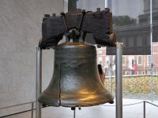 |
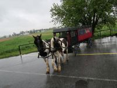 |
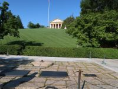 |
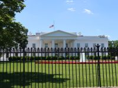 |
| Liberty Bell | Amish Village | Arlington National Cemetery | White House |
Early in the morning, 7:00, we joined a two days tour at a tour company in Manhattan.
Philadelphia played the important role for American War of Independence.
"The Liberty Bell is an iconic symbol of American independence, located in Philadelphia, Pennsylvania. Formerly placed in the steeple of the Pennsylvania State House (now renamed Independence Hall), the bell today is located in the Liberty Bell Center in Independence National Historical Park."
Around that time I felt sick, because I had caught a cold since the first day, and it was raining and temperature was very low, under 10 degree.
We visited Amish Village and rode in their two-horse carriage.
"The Amish, German, are a group of traditionalist Christian church. The Amish are known for simple living, plain dress and reluctance to adopt many conveniences of modern technology."
They continue an old style live of emigretion era.
Just I think that Arlington National Cemetery has two special areas. One is Tomb of the Unknown Soldier which is guarded in 24 hours and changing the Guard every some times is a famous ceremony. Other is the best place on hill where Kennedy family sleep forever. I felt the Kennedy family is special for American.
I got a shock because White House was rather mean. I couldn't feel authority at all, although we saw it from the back side and a bit far place.
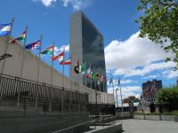 |
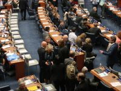 |
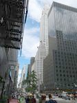 |
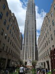 |
| United Nations Headquartoors | The inside of U.N.H. | Chysleer Building | Rockefeller Center |
United Nations Headquarter is quite open, we can look around the inside, and we can see even a meeting from a special window.
I made reservation, bought a ticket in Japan.
In Manhattan there are a lot of skyscrapers and famous buildings.
We walked through Chrysler Building, Grand Central Terminal, 5th Avenue, St. Patrick's Cathedral, Trump Tower
Streets or Avenues are always mixed with bright light and gloom shadow, because of tall buildings.
We had lunch at a well-known street stall, Halal Guy's. It was grilled cut chicken, lamb and some vegetables, and it was big, so we shared it.
We didn't want to do shopping, so we just walked around 5th Av.
Trump Tower is just a building, a little gorgeous, but it had policemen at the both side of building, and baggage check at the inside.
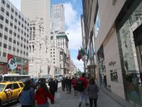 | 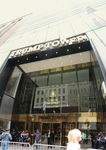 |
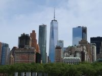 | 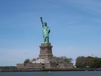 |
| 5th Avenue | Trumptower | One World | Statue of Liberty |
7th day, we took part in 1-Day New York City Tour. The tour bus went through Manhattan fast, and I do not remember well where each place was and even where I went. It were getting off only at Metropolitan Museum of Art, Washington Square Park and Green belt & Chelsea Market to tour. Then we rode a cruise ship and we could see Town, One World Building and Statue of Liberty on the ship, which was wonderful.
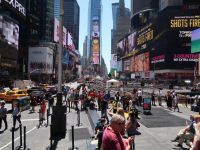 | 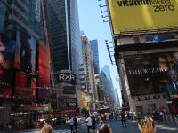 |
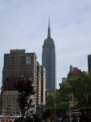 | 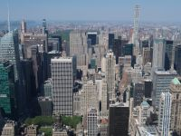 |
| Times Square | Broadway | Empire State Bullding | A view of the Observatory |
By the way, my physical condition was terrible for a cold and fatigue.
We visited a Japanese local tour company, "At New York", to buy Empire State Building Tickets and a Night View tour.
Then we made a tour of Apple Store, 5th Av., Rockefeller Center, Times Square, New York Public Library and Empire State Building.
Times Square is tourist destination, entertainment center and the center of New York. It was crowded by a lot of people who came and went.
At the end, we climbed up the observatory of Empire State Building on 80 and 86 floor.
As expected, the wide scenery of skyscrapers was marvelous.
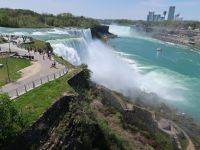 | 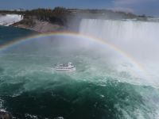 | 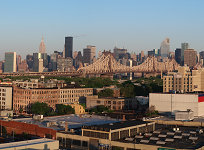 | 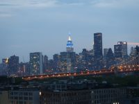 |
| Niagara Falls | Niagara Falls | View from Hotel | View from Hotel |
Niagara Falls is proud of abundant water and famous all over the world.
I was really excited, but the place around waterfalls was too huge to give us more impact.
Any way, the scenery was great, and fortunately we could see a beautiful rainbow.
We didn't expect anything for the hotel room at all. I stayed at a room on 1 floor, and after a few days I could guess that this hotel had a better room for view. So I requested good room and we moved to 6 floor but it was different from the direction of 1 floor view. I asked if they had a room with a view of Manhattan, although I didn't think so. However they said yes, then I requested it again.
Finally, we got 10 floor, the tallest, a room with good view. It was wonderful that I could see Empire State Building on the bed at any time. Just at that time of sunrise or sunset, Manhattan was changing the figure gradually, that was picturesque and marvelous. The most beautiful time was just before lighting.
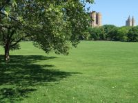 | 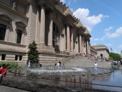 | 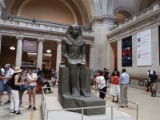 | 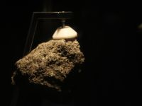 |
| Central Park | Metropolitan Museum of Art | The insite of the museum | Moon Ston |
Central Park is big, The park is 341 hectares, size of north and south 4km X east and west 0.8km.
It is three times as big as Japanese Imperial Palace.
We strolled no more than the half.
In the park people were enjoying walking, running, cycling, riding a horse carriage or playing some sports. Of course many tourists gathered from various countries.
Then we visited The Metropolitan Museum of Art and looked around arts for a while.
For lunch we headed to Madison Square Park and we found soon well-known hamburger shop, Shake Shack, in the park.
As we were in a line, a shop assistant came and said "if you Japanese, I recommend this, cheeze bagger".
We ordered it and chicken burger. Both of them were very good. The taste didn't lose the reputation.
After lunch we visited American Museum of Natural History. We found some images like the bone's dinosaur which a famous movie showed in the screen.
I am interested in Moon Stone, Basalt from the Moon, and I looked for it and I found it after a while.
It might be the most expensive stone in the world.
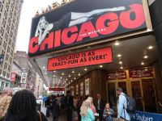 | 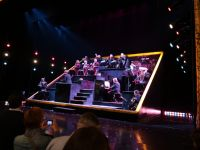 | 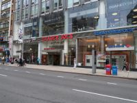 | 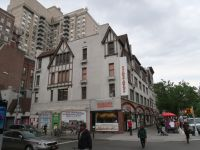 |
| Ambassador Theatre | {Chicago} | Trader Joe's | Zabar's |
I am not interested in arts and theaters. But musical shows are very famous in New York. So I tried to go there but I didn't want to pay expensive fare.
We lined up in front of a theater from one hour ago of the opening the ticket window and bought rush tickets that is discount ticket for only lined people.
We got two seats of $34, normally 120-$130.
Our seats are the third line and the right side of stage, very good position.
Then before the show we called on two supermarket, Trader Joe's and Zabar's. Because of Saturday, a lot of people were there. I had two impression for American supermarkets. One was that goods were too many, other was to try to have a feature for keeping a brand image.
Later, at 2:30 PM the show rose the curtain. The stage proceeded, facing us with impression and power that overwhelmed us.
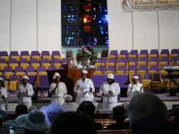 | 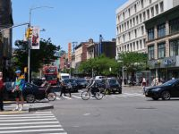 | 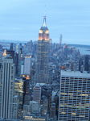 | 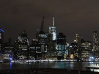 |
| Gospel Music | Harlem 125th St | Night view | Night view |
Gospel Music is so famous that I visited Greater Refuge Temple in Harlem. Harlem has a bad image, dark and rampageous. But I heard that it is not dangerous and has become a good tourist spot, although it seems that we are better not to go to the inside of the area. When we were there, it looked a normal town. We just walked main street, 125th Av., and called on well-known Apollo Theater, and Marcus Garvey Park on the hill to look out over Harlem. Anyway Gospel Music gave us the great impact, that singers and attendee were in a special atmosphere or in other world as worship.
At evening we joined the tour to see Manhattan night view from three places, observatory on Rockefeller Center, Brooklyn Promenade and Brooklyn Heights. Top Of The Rock showed amazing views, twilight skyscrapers lighting up. At the promenade we could see the dynamic Manhattan panorama view. It is said that New York City aid building owners to light up buildings for tourist.
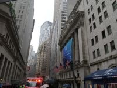 | 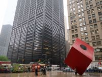 | 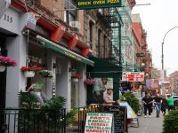 | 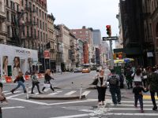 |
| New York Stock Exchange | Red Cube | Little Italy | Soho & Nolita |
It was rain the thirteenth day. My condition was still bad seriously.
At first we went to see Charging Bull, but we were not able to take a picture and to get close to it.
Because Chinese groups interrupted us powerfully and impudently, and we gave up.
Then we were off to Wall Street to see Federal Hall National Memorial, Federal Reserve Bank, Red Cube and New York Stock Exchange, despite of rain.
Wall Street was full of big and tall buildings, although there are many arts like "Red Cube", "Group of Four Trees" and "Charging Bull".
Early in the morning we got to "Charging Bull" again and I was able to take photos this time. Next we looked up at One World that was big and solemn in near place. Then we arrived at Brooklyn Bridge and walked until the half. After that we visited City Holl near the bridge. Then we had lunch at Peter Luger Steak House which is famous for tasty aged meat. But unfortunately it was not my taste. That day was last day, So I made my mind up and strolled Chinatown & Little Italy and Soho & Nolita. It seemed that Chinatown was big and surrounded Little Italy which tasty-looking restaurants arrayed in. Soho & Nolita didn't attract us, because it looked no more than old fashioned towns.
About food
In New York there are various kind and various countries's food. Furthermore they have famous and excellent chef and restaurants.
I ate a bit them and I thought food in Japan were no less than them.
About traficc
I was surprised at many cars parking on the edge of a road, especially in a residence area.
New York is almost one-way traffic on paths and streets.
It seems to be caused by it that many cars always park on the edge of streets.
At first we used Queens Plaza subway station, later we used Queensboro Plaza staton to go to Manhattan, two station were close. Because Queensboro Plaza was old and looked pity. It seemed two lines might carry different kind of passengers who live in different area. To ride on a train, Queensboro Plaza relieved us more.
American were kind
At the airport I asked a 60s man about an airport bus. He said, "Your hotel is on the way to my home, so follow me." Then he brought us to the nearest subway station for our hotel. When we said, "Goodbye", he wrote down his phone number and said, "Please call if you would be troubled"
I heard he lived in Japan a couple of years as a English teacher. He was so kind and could speak Japanese a bit.
Besides, we asked to many people and most of them were very kind. They helped us a lot, writing a map, taking us to a place, telling a place kindly.
We intended to do unhurried trip, but actually, we had hard time for the trip. Furthermore, my physical condition was awful through the trip.
However we had a good time with America and American, and enjoyed a lot.
{kind=link}
{kind=link}
{kind=link}
{kind=link}
{kind=link}
{kind=link}
{kind=link}
{kind=link}
{kind=link}
{kind=link}
{kind=link}
{kind=link}
{kind=link}
{kind=link}
{kind=link}
{kind=link}
{kind=link}
{kind=link}
{kind=link}
{kind=link}
{kind=link}
{kind=link}
{kind=link}
{kind=link}
{kind=link}
{kind=link}
{kind=link}
{kind=link}
{kind=link}
{kind=link}
{kind=link}
{kind=link}
{kind=link}
{kind=link}
{kind=link}
{kind=link}
{kind=link}
{kind=link}
{kind=link}
{kind=link}